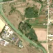
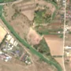

1,3 ha · Gâdinți
văzută schimbată prima dată pe 1 oct. 2026


Autorizația cea mai apropiată nu acoperă tăierea: schimbarea cade în afara parcelei autorizate.
APV 2500023100090 · Ocolul Silvic Roman, valabilă 6 oct. 2025 – 30 nov. 2025, la 198 m
Terenul: pădure de stat, după amenajamentul silvic publicat.
Ce se vede în poze: În poza detaliată zona marcată era acoperită de o pădure deasă de luncă, iar în «înainte» este verde închis. În «după» o parte din zonă este golă, de culoare deschisă, cu margine clară, în timp ce restul pădurii din jur rămâne verde, deci copacii par tăiați.
în arie protejată: Râul Siret între Pașcani și Roman, Lunca Siretului Mijlociu